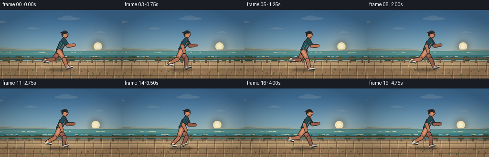
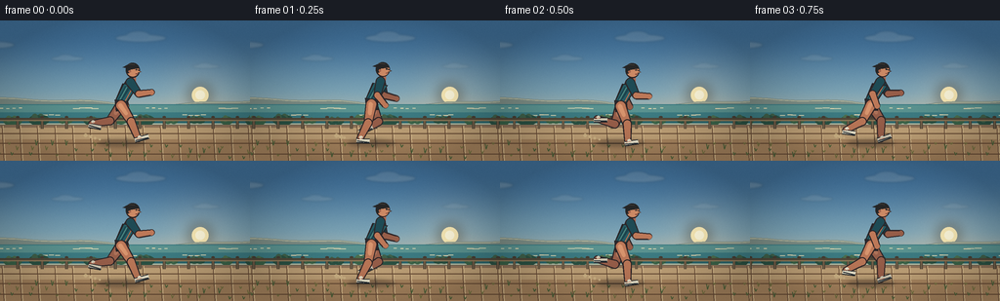

CODING AGENTS AS PIXEL WORLD MODELS
traex/DeepSeek-V4.1-Flash · instance_preservation_0032
点击播放 · 原生 RGB 像素
逐轮保存的候选
回放视频、检查图与代码变化。
每份候选均可单独播放。实际图片检查记录在下方工具轨迹中。
候选 01播放与检查图
点击播放 · 原生 RGB 像素

展开代码变化
--- 上一保存版本
+++ 本次保存版本
@@ -0,0 +1,518 @@
+from __future__ import annotations
+
+import math
+from pathlib import Path
+
+import numpy as np
+from PIL import Image, ImageDraw, ImageFilter
+
+import artifact_io
+
+
+CASE_DIR = Path(__file__).resolve().parent
+WIDTH, HEIGHT = 256, 144
+FRAMES, FPS = 20, 4.0
+SS = 3
+CW, CH = WIDTH * SS, HEIGHT * SS
+
+
+def mix(a, b, amount):
+ return tuple(round(a[i] * (1.0 - amount) + b[i] * amount) for i in range(3))
+
+
+def smoothstep(edge0, edge1, value):
+ x = np.clip((value - edge0) / (edge1 - edge0), 0.0, 1.0)
+ return x * x * (3.0 - 2.0 * x)
+
+
+def sky_background(t):
+ y = np.linspace(0.0, 1.0, CH, dtype=np.float32)[:, None]
+ top = np.array([67, 116, 158], dtype=np.float32)
+ middle = np.array([137, 174, 186], dtype=np.float32)
+ horizon = np.array([244, 194, 142], dtype=np.float32)
+ low = smoothstep(0.08, 0.67, y)
+ high = smoothstep(0.48, 0.91, y)
+ rows = top[None, :] * (1.0 - low[:, :, None]) + middle[None, :] * low[:, :, None]
+ rows = rows * (1.0 - high[:, :, None]) + horizon[None, :] * high[:, :, None]
+
+ xx = np.arange(CW, dtype=np.float32)[None, :]
+ sun_x = (205.0 * SS) - t * 1.7 * SS
+ sun_y = 76.5 * SS
+ dist = np.sqrt((xx - sun_x) ** 2 + (y * CH - sun_y) ** 2)
+ glow = np.clip(1.0 - dist / (82.0 * SS), 0.0, 1.0) ** 2.4
+ rows = rows + glow[:, :, None] * np.array([37.0, 19.0, 4.0], dtype=np.float32)
+
+ grain_rng = np.random.default_rng(32)
+ grain = grain_rng.normal(0.0, 1.15, (CH, CW, 1)).astype(np.float32)
+ rows = np.clip(rows + grain, 0, 255).astype(np.uint8)
+ return Image.fromarray(rows)
+
+
+def draw_soft_ellipse(draw, box, fill, blur=0):
+ if blur <= 0:
+ draw.ellipse(box, fill=fill)
+ return
+ layer = Image.new("RGBA", (CW, CH), (0, 0, 0, 0))
+ local = ImageDraw.Draw(layer)
+ local.ellipse(box, fill=fill)
+ layer = layer.filter(ImageFilter.GaussianBlur(blur * SS))
+ draw._image.alpha_composite(layer)
+
+
+def polyline(points, fill, width):
+ return [(round(x * SS), round(y * SS)) for x, y in points], round(width * SS), fill
+
+
+def draw_clouds(image, t):
+ layer = Image.new("RGBA", (CW, CH), (0, 0, 0, 0))
+ draw = ImageDraw.Draw(layer)
+ cloud_defs = [
+ (28, 25, 43, 7, 0.16, 2.1),
+ (104, 39, 34, 5, 0.12, 1.4),
+ (179, 18, 52, 8, 0.15, 1.8),
+ (246, 47, 29, 4, 0.10, 1.2),
+ ]
+ for base_x, y, w, h, alpha, parallax in cloud_defs:
+ x = ((base_x - t * parallax) % 310) - 35
+ draw.ellipse(
+ (round((x - w / 2) * SS), round((y - h / 2) * SS),
+ round((x + w / 2) * SS), round((y + h / 2) * SS)),
+ fill=(255, 240, 216, round(alpha * 255)),
+ )
+ draw.ellipse(
+ (round((x - w * 0.28) * SS), round((y - h * 0.9) * SS),
+ round((x + w * 0.18) * SS), round((y + h * 0.2) * SS)),
+ fill=(255, 244, 226, round(alpha * 210)),
+ )
+ layer = layer.filter(ImageFilter.GaussianBlur(1.1 * SS))
+ image.alpha_composite(layer)
+
+
+def draw_sun(image, t):
+ x = (205.0 - t * 1.7) * SS
+ y = 76.5 * SS
+ layer = Image.new("RGBA", (CW, CH), (0, 0, 0, 0))
+ draw = ImageDraw.Draw(layer)
+ r = 8.5 * SS
+ draw.ellipse((x - r, y - r, x + r, y + r), fill=(255, 238, 184, 245))
+ draw.ellipse((x - r * 0.55, y - r * 0.55, x + r * 0.55, y + r * 0.55),
+ fill=(255, 249, 220, 255))
+ glow = layer.filter(ImageFilter.GaussianBlur(7.0 * SS))
+ image.alpha_composite(glow)
+ image.alpha_composite(layer)
+
+
+def mountain_path(base_y, amplitude, period, phase, scroll, width=WIDTH + 36):
+ points = []
+ for x in range(-24, width + 4, 3):
+ wx = x + scroll
+ h = (
+ amplitude * (0.55 + 0.45 * math.sin(wx / period + phase))
+ + amplitude * 0.20 * math.sin(wx / (period * 0.39) + phase * 2.1)
+ )
+ points.append((x, base_y - h))
+ return points
+
+
+def draw_landscape(image, t):
+ draw = ImageDraw.Draw(image)
+
+ # Distant headland, softened by the marine haze.
+ far = mountain_path(87.5, 8.0, 42.0, 0.9, t * 2.0)
+ far_poly = far + [(292, 100), (-24, 100)]
+ draw.polygon([(round(x * SS), round(y * SS)) for x, y in far_poly],
+ fill=(126, 143, 135, 255))
+ far_light = [(x, y + 1.0) for x, y in far]
+ draw.line([(round(x * SS), round(y * SS)) for x, y in far_light],
+ fill=(183, 186, 161, 150), width=SS)
+
+ # A darker near headland anchors the left side of the tracking shot.
+ near = mountain_path(93.0, 5.4, 29.0, 2.5, t * 4.0)
+ near_poly = near + [(292, 104), (-24, 104)]
+ draw.polygon([(round(x * SS), round(y * SS)) for x, y in near_poly],
+ fill=(78, 106, 94, 255))
+
+ # Ocean bands and small moving highlights.
+ draw.rectangle((0, 86 * SS, CW, 108 * SS), fill=(62, 126, 133, 255))
+ draw.rectangle((0, 87 * SS, CW, 94 * SS), fill=(92, 149, 146, 255))
+ draw.rectangle((0, 101 * SS, CW, 108 * SS), fill=(48, 107, 112, 255))
+ for i in range(30):
+ x = ((i * 37.3 - t * (7.0 + (i % 3) * 1.8) + 18) % 292) - 18
+ y = 90 + (i * 7) % 14 + math.sin(t * 2.0 + i) * 0.4
+ length = 3 + (i % 4) * 2
+ color = (201, 208, 177, 90) if i % 3 else (232, 218, 178, 80)
+ draw.line((round(x * SS), round(y * SS), round((x + length) * SS),
+ round(y * SS)), fill=color, width=SS)
+
+ # Pale surf line against the shore.
+ shore_y = 106.0
+ draw.line((0, round(shore_y * SS), CW, round(shore_y * SS)),
+ fill=(224, 218, 184, 180), width=round(1.1 * SS))
+
+ # Midground shrubs give the horizontal camera move readable parallax.
+ rng = np.random.default_rng(71)
+ for i in range(22):
+ base_x = ((i * 27.0 - t * 25.0) % 330) - 38
+ y = 103.0 + (i % 3) * 0.5
+ r = 4.2 + (i % 4) * 1.1
+ color = (43, 83, 68, 245) if i % 2 else (59, 101, 74, 245)
+ draw.ellipse(((base_x - r) * SS, (y - r * 0.8) * SS,
+ (base_x + r) * SS, (y + r * 0.55) * SS), fill=color)
+ draw.ellipse(((base_x - r * 0.6) * SS, (y - r * 0.95) * SS,
+ (base_x + r * 0.25) * SS, (y + r * 0.1) * SS),
+ fill=mix(color[:3], (150, 160, 102), 0.20) + (235,))
+
+ # Boardwalk surface.
+ draw.rectangle((0, 107 * SS, CW, CH), fill=(178, 149, 112, 255))
+ draw.rectangle((0, 107 * SS, CW, 110 * SS), fill=(145, 117, 91, 255))
+ draw.rectangle((0, 110 * SS, CW, 122 * SS), fill=(197, 166, 123, 255))
+ draw.rectangle((0, 122 * SS, CW, CH), fill=(173, 137, 98, 255))
+
+ # Plank seams scroll at path speed.
+ for i in range(18):
+ x = ((i * 18.0 - t * 74.0) % 324) - 34
+ draw.line((round(x * SS), 108 * SS, round((x + 2.0) * SS), CH),
+ fill=(121, 91, 66, 95), width=SS)
+ draw.line((round((x + 1.1) * SS), 108 * SS, round((x + 3.2) * SS), CH),
+ fill=(220, 191, 144, 70), width=SS)
+ for y, alpha in ((116, 45), (126, 55), (137, 70)):
+ draw.line((0, round(y * SS), CW, round(y * SS)),
+ fill=(107, 78, 55, alpha), width=SS)
+
+ # Railing between the trail and the sea.
+ rail_scroll = t * 57.0
+ for i in range(13):
+ x = ((i * 25.0 - rail_scroll) % 325) - 32
+ draw.rectangle((round((x - 1.3) * SS), 99 * SS,
+ round((x + 1.3) * SS), 111 * SS),
+ fill=(74, 65, 53, 255))
+ draw.rectangle((round((x - 0.7) * SS), 99 * SS,
+ round((x + 0.7) * SS), 111 * SS),
+ fill=(117, 99, 75, 255))
+ draw.ellipse((round((x - 1.8) * SS), round(98.0 * SS),
+ round((x + 1.8) * SS), round(100.1 * SS)),
+ fill=(70, 62, 51, 255))
+ draw.rectangle((0, 100 * SS, CW, 102.1 * SS), fill=(83, 72, 57, 255))
+ draw.rectangle((0, 102.1 * SS, CW, 103.1 * SS), fill=(143, 121, 88, 255))
+
+ # Foreground grass and tiny stones make the nearest parallax plane crisp.
+ for i in range(45):
+ x = ((i * 19.7 - t * 118.0 + rng.normal(0, 2)) % 300) - 22
+ y = 127 + (i * 11) % 16
+ h = 2.0 + (i % 4) * 1.1
+ col = (83, 103, 61, 210) if i % 2 else (123, 119, 68, 200)
+ draw.line((round(x * SS), round(y * SS),
+ round((x - 1.0) * SS), round((y - h) * SS)),
+ fill=col, width=SS)
+ draw.line((round(x * SS), round(y * SS),
+ round((x + 1.4) * SS), round((y - h * 0.8) * SS)),
+ fill=col, width=SS)
+
+
+RUN_KEYS = np.array([
+ # thigh, knee bend, foot pitch
+ [32.0, 10.0, -8.0],
+ [20.0, 18.0, 2.0],
+ [0.0, 12.0, 14.0],
+ [-20.0, 22.0, 20.0],
+ [-36.0, 45.0, 28.0],
+ [-18.0, 88.0, 10.0],
+ [10.0, 104.0, -12.0],
+ [34.0, 58.0, -20.0],
+], dtype=np.float32)
+
+
+def leg_pose(u):
+ u = u % 1.0
+ scaled = u * len(RUN_KEYS)
+ i = int(math.floor(scaled)) % len(RUN_KEYS)
+ f = scaled - math.floor(scaled)
+ a = RUN_KEYS[i]
+ b = RUN_KEYS[(i + 1) % len(RUN_KEYS)]
+ f = f * f * (3.0 - 2.0 * f)
+ return a * (1.0 - f) + b * f
+
+
+def limb_points(origin, angle_deg, length):
+ a = math.radians(angle_deg)
+ return (origin[0] + math.sin(a) * length,
+ origin[1] + math.cos(a) * length)
+
+
+def tapered_limb(draw, p1, p2, r1, r2, fill, outline):
+ x1, y1 = p1[0] * SS, p1[1] * SS
+ x2, y2 = p2[0] * SS, p2[1] * SS
+ r1, r2 = r1 * SS, r2 * SS
+ dx, dy = x2 - x1, y2 - y1
+ length = max(1e-3, math.hypot(dx, dy))
+ nx, ny = -dy / length, dx / length
+ outline_poly = [
+ (x1 + nx * (r1 + 1.1 * SS), y1 + ny * (r1 + 1.1 * SS)),
+ (x2 + nx * (r2 + 1.1 * SS), y2 + ny * (r2 + 1.1 * SS)),
+ (x2 - nx * (r2 + 1.1 * SS), y2 - ny * (r2 + 1.1 * SS)),
+ (x1 - nx * (r1 + 1.1 * SS), y1 - ny * (r1 + 1.1 * SS)),
+ ]
+ draw.polygon(outline_poly, fill=outline)
+ draw.ellipse((x1 - r1 - SS, y1 - r1 - SS, x1 + r1 + SS, y1 + r1 + SS),
+ fill=outline)
+ draw.ellipse((x2 - r2 - SS, y2 - r2 - SS, x2 + r2 + SS, y2 + r2 + SS),
+ fill=outline)
+ poly = [
+ (x1 + nx * r1, y1 + ny * r1),
+ (x2 + nx * r2, y2 + ny * r2),
+ (x2 - nx * r2, y2 - ny * r2),
+ (x1 - nx * r1, y1 - ny * r1),
+ ]
+ draw.polygon(poly, fill=fill)
+ draw.ellipse((x1 - r1, y1 - r1, x1 + r1, y1 + r1), fill=fill)
+ draw.ellipse((x2 - r2, y2 - r2, x2 + r2, y2 + r2), fill=fill)
+
+
+def draw_shoe(draw, ankle, pitch_deg, back=False):
+ ax, ay = ankle
+ angle = math.radians(pitch_deg)
+ toe = (ax + math.cos(angle) * 10.5, ay + math.sin(angle) * 10.5 - 1.3)
+ heel = (ax - 3.3, ay + 1.2)
+ top = (ax + 1.2, ay - 2.0)
+ outline = (27, 32, 38, 255)
+ body = (238, 232, 207, 255) if not back else (211, 204, 183, 255)
+ draw.line((round(heel[0] * SS), round(heel[1] * SS),
+ round(toe[0] * SS), round(toe[1] * SS)),
+ fill=outline, width=round(5.5 * SS))
+ draw.line((round(heel[0] * SS), round(heel[1] * SS),
+ round(toe[0] * SS), round(toe[1] * SS)),
+ fill=body, width=round(3.6 * SS))
+ draw.line((round((ax - 2.8) * SS), round((ay + 1.4) * SS),
+ round((toe[0] - 0.2) * SS), round((toe[1] + 1.3) * SS)),
+ fill=(45, 52, 57, 255), width=round(1.2 * SS))
+ draw.ellipse((round(top[0] * SS - 1.8 * SS), round(top[1] * SS - 1.5 * SS),
+ round(top[0] * SS + 1.8 * SS), round(top[1] * SS + 1.5 * SS)),
+ fill=body)
+ draw.line((round((ax - 1.8) * SS), round((ay - 0.3) * SS),
+ round((ax + 3.2) * SS), round((ay - 1.5) * SS)),
+ fill=(210, 101, 67, 230), width=round(0.8 * SS))
+
+
+def draw_leg(draw, hip, thigh, knee_bend, foot_pitch, back=False):
+ knee = limb_points(hip, thigh, 19.2)
+ shin_abs = thigh - knee_bend
+ ankle = limb_points(knee, shin_abs, 19.2)
+ skin = (190, 121, 89, 255) if not back else (154, 96, 75, 255)
+ skin_light = (218, 151, 112, 255) if not back else (176, 116, 91, 255)
+ outline = (47, 38, 40, 255)
+ tapered_limb(draw, hip, knee, 4.8, 3.5, skin, outline)
+ tapered_limb(draw, knee, ankle, 3.5, 2.4, skin, outline)
+ tapered_limb(draw, (hip[0] - 0.8, hip[1] - 0.2),
+ ((hip[0] + knee[0]) / 2, (hip[1] + knee[1]) / 2),
+ 1.05, 0.65, skin_light, skin_light)
+ draw.ellipse((round((knee[0] - 2.5) * SS), round((knee[1] - 2.5) * SS),
+ round((knee[0] + 2.5) * SS), round((knee[1] + 2.5) * SS)),
+ fill=skin)
+ draw_shoe(draw, ankle, foot_pitch, back=back)
+
+
+def draw_arm(draw, shoulder, swing_deg, back=False):
+ elbow_angle = swing_deg + (62.0 if swing_deg > -8 else 52.0)
+ elbow = limb_points(shoulder, swing_deg, 14.8)
+ hand = limb_points(elbow, elbow_angle, 13.2)
+ skin = (190, 121, 89, 255) if not back else (151, 94, 73, 255)
+ outline = (47, 38, 40, 255)
+ shirt = (31, 75, 85, 255) if not back else (25, 59, 69, 255)
+ tapered_limb(draw, shoulder, elbow, 3.9, 2.9, shirt, outline)
+ tapered_limb(draw, elbow, hand, 2.9, 2.2, skin, outline)
+ draw.ellipse((round((hand[0] - 2.6) * SS), round((hand[1] - 2.6) * SS),
+ round((hand[0] + 2.6) * SS), round((hand[1] + 2.6) * SS)),
+ fill=skin)
+
+
+def draw_head(draw, center):
+ x, y = center
+ outline = (43, 36, 37, 255)
+ skin = (207, 139, 102, 255)
+ skin_shadow = (171, 104, 80, 255)
+ hair = (38, 39, 40, 255)
+ hair_light = (69, 62, 56, 255)
+ # Neck.
+ draw.rounded_rectangle((round((x - 3.3) * SS), round((y + 5.2) * SS),
+ round((x + 3.1) * SS), round((y + 12.0) * SS)),
+ radius=round(2.0 * SS), fill=skin_shadow)
+ # Head, cheek, and nose are one clean side-profile silhouette.
+ draw.ellipse((round((x - 7.2) * SS), round((y - 7.7) * SS),
+ round((x + 7.2) * SS), round((y + 7.4) * SS)),
+ fill=outline)
+ draw.ellipse((round((x - 6.0) * SS), round((y - 6.6) * SS),
+ round((x + 6.4) * SS), round((y + 6.2) * SS)),
+ fill=skin)
+ draw.polygon([(round((x + 4.8) * SS), round((y - 1.0) * SS)),
+ (round((x + 9.0) * SS), round((y + 1.4) * SS)),
+ (round((x + 5.2) * SS), round((y + 3.0) * SS))],
+ fill=outline)
+ draw.polygon([(round((x + 4.8) * SS), round((y + 0.0) * SS)),
+ (round((x + 8.1) * SS), round((y + 1.4) * SS)),
+ (round((x + 5.1) * SS), round((y + 2.2) * SS))],
+ fill=skin)
+ # Hair cap and wind-swept fringe.
+ draw.pieslice((round((x - 7.0) * SS), round((y - 7.7) * SS),
+ round((x + 6.4) * SS), round((y + 5.4) * SS)),
+ 180, 352, fill=hair)
+ draw.ellipse((round((x - 7.1) * SS), round((y - 4.0) * SS),
+ round((x - 2.4) * SS), round((y + 3.0) * SS)), fill=hair)
+ draw.polygon([(round((x - 5.5) * SS), round((y - 5.8) * SS)),
+ (round((x - 10.5) * SS), round((y - 3.2) * SS)),
+ (round((x - 5.0) * SS), round((y - 2.1) * SS))],
+ fill=hair)
+ draw.line((round((x - 4.2) * SS), round((y - 6.5) * SS),
+ round((x + 2.0) * SS), round((y - 5.8) * SS)),
+ fill=hair_light, width=SS)
+ # Ear, brow, and eye.
+ draw.ellipse((round((x - 4.3) * SS), round((y - 0.2) * SS),
+ round((x - 1.8) * SS), round((y + 2.3) * SS)),
+ fill=skin_shadow)
+ draw.line((round((x + 2.0) * SS), round((y - 2.3) * SS),
+ round((x + 4.2) * SS), round((y - 2.6) * SS)),
+ fill=(75, 48, 43, 255), width=round(0.7 * SS))
+ draw.ellipse((round((x + 3.0) * SS), round((y - 1.3) * SS),
+ round((x + 4.3) * SS), round((y - 0.1) * SS)),
+ fill=(40, 38, 38, 255))
+ draw.line((round((x + 2.9) * SS), round((y + 3.6) * SS),
+ round((x + 4.9) * SS), round((y + 3.4) * SS)),
+ fill=(123, 65, 59, 220), width=SS)
+
+
+def draw_runner(image, t, phase):
+ draw = ImageDraw.Draw(image)
+ bob = 1.15 * math.sin(phase * 2.0 + 0.4)
+ sway = 0.45 * math.sin(phase + 0.2)
+ hip = (124.0 + sway, 87.0 + bob)
+ shoulder = (133.5 + sway * 0.7, 63.0 + bob * 0.55)
+
+ # Contact shadow.
+ shadow = Image.new("RGBA", (CW, CH), (0, 0, 0, 0))
+ sd = ImageDraw.Draw(shadow)
+ sd.ellipse(((hip[0] - 24) * SS, 122.6 * SS,
+ (hip[0] + 23) * SS, 129.0 * SS), fill=(53, 45, 39, 92))
+ shadow = shadow.filter(ImageFilter.GaussianBlur(2.2 * SS))
+ image.alpha_composite(shadow)
+
+ right_u = phase / (2.0 * math.pi)
+ left_u = right_u + 0.5
+ right = leg_pose(right_u)
+ left = leg_pose(left_u)
+
+ # Back-side limbs first, with a darker material response.
+ back_is_left = math.sin(right_u * 2.0 * math.pi) >= 0.0
+ if back_is_left:
+ draw_leg(draw, hip, left[0], left[1], left[2], back=True)
+ draw_arm(draw, shoulder, -35.0 * math.cos(phase), back=True)
+ else:
+ draw_leg(draw, hip, right[0], right[1], right[2], back=True)
+ draw_arm(draw, shoulder, 35.0 * math.cos(phase), back=True)
+
+ # Shorts and torso.
+ outline = (39, 36, 38, 255)
+ shorts = (43, 49, 58, 255)
+ shorts_light = (66, 74, 80, 255)
+ torso_dark = (27, 68, 78, 255)
+ torso = (38, 93, 101, 255)
+ torso_light = (74, 132, 126, 255)
+
+ torso_poly = [
+ (shoulder[0] - 8.3, shoulder[1] + 1.2),
+ (shoulder[0] + 7.2, shoulder[1] + 3.8),
+ (hip[0] + 6.2, hip[1] - 3.3),
+ (hip[0] - 6.4, hip[1] - 5.0),
+ ]
+ draw.polygon([(round(x * SS), round(y * SS)) for x, y in torso_poly],
+ fill=outline)
+ torso_inner = [
+ (shoulder[0] - 6.7, shoulder[1] + 2.0),
+ (shoulder[0] + 5.8, shoulder[1] + 4.5),
+ (hip[0] + 4.9, hip[1] - 4.0),
+ (hip[0] - 5.0, hip[1] - 5.5),
+ ]
+ draw.polygon([(round(x * SS), round(y * SS)) for x, y in torso_inner],
+ fill=torso)
+ draw.polygon([
+ (round((shoulder[0] - 5.6) * SS), round((shoulder[1] + 4.1) * SS)),
+ (round((shoulder[0] + 0.5) * SS), round((shoulder[1] + 4.9) * SS)),
+ (round((hip[0] - 0.5) * SS), round((hip[1] - 4.2) * SS)),
+ (round((hip[0] - 4.4) * SS), round((hip[1] - 4.8) * SS)),
+ ], fill=torso_dark)
+ draw.line((round((shoulder[0] - 4.0) * SS), round((shoulder[1] + 5.0) * SS),
+ round((hip[0] - 2.2) * SS), round((hip[1] - 5.2) * SS)),
+ fill=torso_light, width=round(1.4 * SS))
+ draw.line((round((shoulder[0] + 2.4) * SS), round((shoulder[1] + 4.7) * SS),
+ round((hip[0] + 3.7) * SS), round((hip[1] - 4.1) * SS)),
+ fill=(207, 112, 74, 240), width=round(1.1 * SS))
+
+ draw.polygon([
+ (round((hip[0] - 6.7) * SS), round((hip[1] - 6.5) * SS)),
+ (round((hip[0] + 6.2) * SS), round((hip[1] - 4.8) * SS)),
+ (round((hip[0] + 7.1) * SS), round((hip[1] + 5.6) * SS)),
+ (round((hip[0] - 5.5) * SS), round((hip[1] + 6.0) * SS)),
+ ], fill=outline)
+ draw.polygon([
+ (round((hip[0] - 5.3) * SS), round((hip[1] - 5.2) * SS)),
+ (round((hip[0] + 4.9) * SS), round((hip[1] - 4.0) * SS)),
+ (round((hip[0] + 5.8) * SS), round((hip[1] + 4.1) * SS)),
+ (round((hip[0] - 4.2) * SS), round((hip[1] + 4.6) * SS)),
+ ], fill=shorts)
+ draw.line((round((hip[0] - 2.2) * SS), round((hip[1] - 4.8) * SS),
+ round((hip[0] + 1.0) * SS), round((hip[1] + 4.0) * SS)),
+ fill=shorts_light, width=round(1.2 * SS))
+
+ # Head and the front-side limbs complete the depth ordering.
+ draw_head(draw, (shoulder[0] + 2.2, shoulder[1] - 12.1))
+ if back_is_left:
+ draw_leg(draw, hip, right[0], right[1], right[2], back=False)
+ draw_arm(draw, shoulder, 35.0 * math.cos(phase), back=False)
+ else:
+ draw_leg(draw, hip, left[0], left[1], left[2], back=False)
+ draw_arm(draw, shoulder, -35.0 * math.cos(phase), back=False)
+
+ # A few tiny dust motes lift from the trailing foot.
+ kick = max(0.0, -math.sin(phase * 2.0))
+ for i in range(4):
+ age = (kick + i * 0.22) % 1.0
+ x = hip[0] - 22 - age * 13 - i * 2.0
+ y = 122.0 - age * 3.5 - i * 0.6
+ radius = 1.0 + age * 1.1
+ draw.ellipse((round((x - radius) * SS), round((y - radius) * SS),
+ round((x + radius) * SS), round((y + radius) * SS)),
+ fill=(211, 184, 137, round(70 * (1.0 - age))))
+
+
+def add_finishing(image, t):
+ # Gentle edge falloff and fine film grain keep the small frame cohesive.
+ arr = np.asarray(image.convert("RGB"), dtype=np.float32)
+ yy, xx = np.mgrid[0:CH, 0:CW]
+ vx = (xx / CW - 0.5) * 2.0
+ vy = (yy / CH - 0.5) * 2.0
+ vignette = np.clip(1.0 - 0.18 * (vx * vx + vy * vy), 0.78, 1.0)
+ rng = np.random.default_rng(800 + round(t * 1000))
+ grain = rng.normal(0.0, 1.4, (CH, CW, 1)).astype(np.float32)
+ arr = arr * vignette[:, :, None] + grain
+ arr = np.clip(arr, 0, 255).astype(np.uint8)
+ image = Image.fromarray(arr, "RGB")
+ return image.resize((WIDTH, HEIGHT), Image.Resampling.LANCZOS)
+
+
+def render_frame(index):
+ t = index / FPS
+ base = sky_background(t).convert("RGBA")
+ draw_clouds(base, t)
+ draw_sun(base, t)
+ draw_landscape(base, t)
+ phase = 2.0 * math.pi * t / 0.80
+ draw_runner(base, t, phase)
+ return np.asarray(add_finishing(base, t), dtype=np.uint8)
+
+
+def main():
+ frames = np.stack([render_frame(i) for i in range(FRAMES)])
+ artifact_io.save(frames, CASE_DIR)
+ print(f"saved {frames.shape} at {FPS:g} fps to {CASE_DIR}")
+
+
+if __name__ == "__main__":
+ main()
候选 02播放与检查图
点击播放 · 原生 RGB 像素


展开代码变化
--- 上一保存版本
+++ 本次保存版本
@@ -493,7 +493,7 @@
grain = rng.normal(0.0, 1.4, (CH, CW, 1)).astype(np.float32)
arr = arr * vignette[:, :, None] + grain
arr = np.clip(arr, 0, 255).astype(np.uint8)
- image = Image.fromarray(arr, "RGB")
+ image = Image.fromarray(arr)
return image.resize((WIDTH, HEIGHT), Image.Resampling.LANCZOS)
可观测工具轨迹
实际执行的命令与返回图片。
命令 1exit 0
/bin/bash -lc "pwd && rg --files -g '"'!*'"\\.git*' | sed -n '1,200p'"
命令 2exit 0
/bin/bash -lc "sed -n '1,240p' prompt.txt"
命令 3exit 0
/bin/bash -lc "sed -n '1,260p' GENERATION_RULES.md"
命令 4exit 0
/bin/bash -lc 'cat task_spec.json'
命令 5exit 0
/bin/bash -lc 'ls -la && find . -maxdepth 2 -type d -print | sort'
命令 6exit 0
/bin/bash -lc "sed -n '1,260p' artifact_io.py"
命令 7exit 0
/bin/bash -lc "sed -n '1,260p' player_template.html"
命令 8exit 0
/bin/bash -lc "find .tmp -maxdepth 2 -type f -printf '%p %s bytes\\n' | sort"
命令 9exit 0
/bin/bash -lc "python - <<'PY'
from PIL import Image
import PIL, numpy
print('PIL', PIL.__version__, 'numpy', numpy.__version__)
PY"命令 10exit 0
/bin/bash -lc 'command -v chafa || true; command -v viu || true; command -v ffmpeg || true; command -v convert || true'
命令 11exit 1
/bin/bash -lc 'python generate.py'
命令 12exit 1
/bin/bash -lc 'python generate.py'
命令 13exit 0
/bin/bash -lc 'python generate.py'
命令 14exit 0
/bin/bash -lc "python - <<'PY'
from PIL import Image
import numpy as np
for fi in [0,2,4,6,8,10,12,14,16,18]:
im=Image.open(f'frames/{fi:02d}.png').convert('RGB')
a=np.asarray(im)
crop=Image.fromarray(a[42:134,88:174]).resize((64,52),Image.Resampling.LANCZOS)
b=np.asarray(crop).astype(float)
lum=b@np.array([.2126,.7152,.0722])
chars=np.array(list(' .,:;irsXA253hMHGS#9B&@'))
q=np.clip((lum-18)/220*(len(chars)-1),0,len(chars)-1).astype(int)
print(f'\\nFRAME {fi} runner crop')
for row in q: print(''.join(chars[row]))
PY"命令 15exit 0
/bin/bash -lc "python - <<'PY'
from PIL import Image
import numpy as np
import generate
for fi in [0,2,4,6,8,10,12,14,16,18]:
t=fi/4
im=Image.new('RGBA',(generate.CW,generate.CH),(0,0,0,0))
generate.draw_runner(im,t,2*np.pi*t/.8)
a=np.asarray(im)[:, :, 3]
# runner bounds crop at 1x coordinates
a=np.asarray(Image.fromarray(a).resize((generate.WIDTH,generate.HEIGHT),Image.Resampling.LANCZOS))
c=a[44:133,82:172]
c=np.asarray(Image.fromarray(c).resize((60,59),Image.Resampling.LANCZOS))
chars=np.array(list(' .:-=+*#%@'))
q=np.clip(c/255*(len(chars)-1),0,len(chars)-1).astype(int)
print(f'\\nFRAME {fi}')
for row in q: print(''.join(chars[row]))
PY"命令 16exit 0
/bin/bash -lc "python - <<'PY'
from PIL import Image
import numpy as np
for fi in [0,2,4,6,8,10,12,14,16,18]:
im=Image.open(f'frames/{fi:02d}.png').convert('RGB')
a=np.asarray(im)
# crop to runner and print hue classes (dark=#, skin=s, blue=b, pale=., gold=g, green=G, red=r)
crop=np.asarray(Image.fromarray(a[46:134,87:176]).resize((54,53),Image.Resampling.NEAREST))
print(f'\\nFRAME {fi}')
for row in crop:
s=''
for R,G,B in row:
if max(R,G,B)<55: c='#'
elif R>145 and G>80 and R>G*1.18 and G>B*1.05: c='s'
elif B>G and G>R and G>65: c='b'
elif R>170 and G>140 and B<130: c='g'
elif G>R*1.12 and G>B*.95: c='G'
elif max(R,G,B)>210 and abs(int(R)-int(G))<30: c='.'
elif R>G*1.18 and G>B*1.25: c='r'
else: c=' '
s+=c
print(s)
PY"命令 17exit 0
/bin/bash -lc "python - <<'PY'
from PIL import Image
import numpy as np
for fi in [0,2,4,6,8,10,12,14,16,18]:
im=Image.open(f'frames/{fi:02d}.png').convert('RGB')
a=np.asarray(im)
# render every 4th row, every 2nd col using ANSI truecolor background blocks
# crop scene only for full composition
crop=a[0:144:4,0:256:2]
print(f'\\nFRAME {fi} FULL')
for row in crop:
print(''.join(f'\\x1b[48;2;{R};{G};{B}m ' for R,G,B in row)+'\\x1b[0m')
PY"命令 18exit 0
/bin/bash -lc "python generate.py && python - <<'PY'
from pathlib import Path
import numpy as np
from PIL import Image
import artifact_io
frames=np.stack([np.asarray(Image.open(p).convert('RGB')) for p in sorted(Path('frames').glob('*.png'))])
print('frames',frames.shape,frames.dtype,'range',frames.min(),frames.max())
print('mean/std',frames.mean(axis=(0,1,2)).round(2),frames.std(axis=(0,1,2)).round(2))
d=np.abs(np.diff(frames.astype(np.int16),axis=0))
print('motion mean/max',d.mean().round(3),d.max(),'changed fraction',(d>4).mean().round(4))
print('unique colors',len(np.unique(frames.reshape(-1,3),axis=0)))
print('artifacts',[(p.name,p.stat().st_size) for p in [Path('pixels.npz'),Path('inspection.png'),Path('transition_check.png'),Path('index.html')]])
z=np.load('pixels.npz')['pixels']
print('packed',z.shape,z.dtype,'matches',np.all((z[:,:,0]<<16|z[:,:,1]<<8|z[:,:,2])==((frames[0,:,:,0].astype(np.uint32)<<16)|(frames[0,:,:,1].astype(np.uint32)<<8)|frames[0,:,:,2])))
PY"命令 19exit 0
/bin/bash -lc "python - <<'PY'
from pathlib import Path
import numpy as np
from PIL import Image
frames=np.stack([np.asarray(Image.open(p).convert('RGB')) for p in sorted(Path('frames').glob('*.png'))])
z=np.load('pixels.npz')['pixels']
exp=(frames[:,:,:,0].astype(np.uint32)<<16)|(frames[:,:,:,1].astype(np.uint32)<<8)|frames[:,:,:,2]
print('all frame packed match:',np.array_equal(z,exp.transpose(1,2,0)))
PY"命令 20exit 0
/bin/bash -lc "python - <<'PY' import numpy as np, math import generate for i in range(8): u=i/8 thigh,kb,pitch=generate.leg_pose(u) hip=(124,87) knee=generate.limb_points(hip,thigh,19.2) ankle=generate.limb_points(knee,thigh-kb,19.2) toe_y=ankle[1]+math.sin(math.radians(pitch))*10.5-1.3 heel_y=ankle[1]+1.2 print(i, 'pose',np.round([thigh,kb,pitch],1),'knee',np.round(knee,1),'ankle',np.round(ankle,1),'shoe bottom',round(max(toe_y,heel_y)+2.75,1)) PY"
命令 21exit 0
/bin/bash -lc "python -m py_compile generate.py && sha256sum pixels.npz frames/*.png index.html > .tmp/render_hash_before.txt && python generate.py >/dev/null && sha256sum pixels.npz frames/*.png index.html > .tmp/render_hash_after.txt && diff -u .tmp/render_hash_before.txt .tmp/render_hash_after.txt && echo 'deterministic render: yes'"
保存候选 2 份；完成命令 21 次；可验证图片返回 0 张。原始 API 响应与完整日志保留在本地。